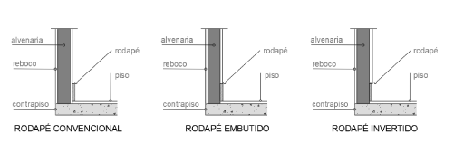

O projeto executivo de design de interiores desempenha um papel fundamental ao assegurar que a visão do designer seja executada com precisão e eficiência. Ele proporciona informações detalhadas sobre medidas, materiais, acabamentos e outros elementos a serem utilizados no projeto, garantindo a correta especificação de todos os detalhes. Isso ajuda a evitar erros durante a execução.
Dessa forma, o projeto executivo funciona como uma ferramenta de comunicação entre o designer e os profissionais responsáveis pela execução, como prestadores de serviços e fornecedores. Ele deve considerar rigorosamente as especificações e normas técnicas pertinentes, assegurando que o projeto seja realizado conforme planejado.
Neste sentido, a representação gráfica em vista superior, conhecida como “planta”, desempenha um papel primordial no projeto executivo, comunicando diversos detalhamentos importantes para a execução de mão de obra. Veja agora cada uma delas.
Conforme estudado em unidades curriculares anteriores, no contexto do design de interiores, uma planta refere-se a um desenho técnico que representa a disposição espacial de um ambiente. São desenhos geralmente representados em vista superior e oferecem uma visão detalhada da distribuição de móveis, paredes, portas, janelas e outros elementos arquitetônicos dentro de um espaço. As plantas são essenciais para o planejamento e a visualização de um projeto de design de interiores, permitindo que clientes, executores, prestadores de serviços e fornecedores entendam a organização do espaço, o fluxo de circulação e a relação entre diferentes áreas funcionais.
No detalhamento do projeto, é crucial que o designer elabore diversos tipos de plantas, como planta baixa, planta de forro, planta elétrica, planta hidráulica, planta de revestimentos (piso e parede), planta de acabamentos (tintas e papel de parede), planta de iluminação (luminotécnica) e planta de ar-condicionado. Esses desenhos fornecem orientação, eliminam incertezas e asseguram que todos os envolvidos estejam alinhados com a visão do projeto. A precisão é fundamental para evitar erros e retrabalhos dispendiosos.
Em resumo, as plantas são a principal ferramenta para transformar a visão criativa do designer em realidade.
Planta baixa
Fonte: Senac EAD (2024)
Prancha de projeto em planta baixa de leiaute, com a distribuição do mobiliário de um apartamento integrado com cozinha, sala de jantar, estar e dormitório e um banheiro. Na planta baixa estão elementos técnicos como cotas, linhas de marcação dos cortes e indicação do norte. Na lateral da planta está a legenda de todos os elementos que constam no projeto.
No design de interiores, o forro refere-se à superfície superior de um ambiente, geralmente composta de materiais como gesso, madeira, PVC (policloreto de vinila), metal, entre outros, que cobrem a estrutura do teto. Essa cobertura pode ser plana, inclinada, decorada ou simples, desempenhando um papel importante tanto estética quanto funcionalmente.
Quanto à estética, o forro pode influenciar significavemente a aparência geral de um espaço. Ele pode ser utilizado para criar uma sensação de altura ou de acolhimento, dependendo do material e do design escolhidos. Além disso, o forro pode ser personalizado com acabamentos como pintura, textura, molduras e iluminação embutida, adicionando interesse visual e complementando o estilo do ambiente.
Quanto à funcionalidade, o forro desempenha várias funções importantes no design de interiores. Ele ajuda a esconder e proteger instalações elétricas, dutos de ar-condicionado, tubulações e outras estruturas, proporcionando um ambiente mais limpo e organizado. Além disso, o forro pode contribuir para o isolamento acústico e térmico do ambiente, melhorando o conforto das pessoas que frequentam aquele lugar.
Em resumo, o forro é uma parte essencial do design de interiores, como dito anteriormente, tanto esteticamente quanto funcionalmente. Ele não apenas define a atmosfera de um espaço, mas também desempenha um papel crucial na organização e no conforto do ambiente. Portanto, sua seleção e execução devem ser cuidadosamente consideradas durante o processo de design.
Na unidade curricular Projetar iluminação de interiores, no conteúdo referente a forros, você teve acesso a informações sobre os tipos de forros e os detalhes e acabamentos disponíveis. Esses detalhes incluem sancas abertas, fechadas e invertidas, bem como rebaixos, tabicas, rasgos e cortineiros. Vale a pena revisar esse conteúdo.
Confira este exemplo de detalhamento de forro:
Planta de forro
Fonte: Senac EAD (2024)
Exemplo de projeto de detalhamento de forro. Na parte esquerda da prancha está representada uma planta em vista superior com medidas gerais do forro e indicação de detalhes. Na lateral direita desta planta está a legenda e dois detalhes. O primeiro detalhe é referente ao cortineiro iluminado e o segundo é referente à tabica de gesso.
Um rodateto é uma moldura instalada onde as paredes encontram o teto. Ele é projetado para cobrir a junção entre a parede e o teto, proporcionando um acabamento estético e muitas vezes funcional. Rodatetos podem ser feitos de diversos materiais, como madeira, gesso, poliuretano ou até mesmo metal, e vêm em uma variedade de estilos e designs para complementar diferentes estilos decorativos. Além de sua função estética, os rodatetos também podem ocultar imperfeições na junção entre a parede e o teto e ajudar a direcionar a atenção para detalhes arquitetônicos específicos.
Já a tabica é uma pequena canaleta instalada no encontro entre o forro e as paredes, criando um detalhe visual discreto. As tabicas proporcionam acabamento entre a parede e o forro, funcionando como uma junta de dilatação e prevenindo trincas no forro devido à movimentação natural dos materiais. Elas evitam que o forro encoste na alvenaria, já que cada material se movimenta de maneira diferente, o que poderia gerar trincas caso estivessem em contato direto.
Os bits são peças que combinam as funções de rodateto e tabica, proporcionando um acabamento estético enquanto também previnem as trincas causadas pela movimentação dos materiais.
Detalhes de forro de gesso
Fonte: Senac EAD (2024)
A ilustração mostra dois detalhes: o primeiro é referente a um cortineiro em corte lateral. Esse cortineiro é iluminado e contém 15 cm de afastamento da parede. O segundo detalhe é referente à tabica de gesso. Essa tabica tem 3 cm de largura e 2 cm de altura.
Ao longo do curso de design de interiores, você já teve contato com alguns conceitos de instalações elétricas. Na unidade curricular Estruturar concepção projetual de design de interiores, você conheceu alguns símbolos de interruptores e tomadas que auxiliam no levantamento métrico. Já na unidade curricular Projetar iluminação de interiores, seu conhecimento sobre tipos de instalações, pontos de tomadas, interruptores e simbologias foi aprofundado. Você aprendeu a interpretar a planta baixa de um projeto elétrico e a compreender as atribuições do designer nesse tipo de projeto.
Agora, nesta unidade curricular, será apresentado um projeto executivo com todos os detalhes necessários para que o seu projeto possa ser executado com precisão.
Planta de pontos elétricos e hidráulicos
Fonte: Senac EAD (2024)
Exemplo de planta baixa de pontos elétricos e hidráulicos com a distribuição de tomadas, interruptores e pontos de água e esgoto. Na lateral da planta está a legenda de todos os elementos que constam no projeto com suas simbologias.
Em etapas anteriores do projeto, o designer já definiu a localização estratégica dos pontos de tomadas e interruptores, considerando a distribuição do mobiliário para garantir fácil acesso e atender às demandas dos ocupantes.
O aspecto essencial de um detalhamento de projeto elétrico é informar ao instalador, prestador de serviço ou construtor o que deve ser feito na hora da execução. Portanto, é crucial que todas as informações estejam presentes nesta planta. Para isso, além da planta baixa com a simbologia devidamente sinalizada e cotada, também é preciso indicar em uma legenda lateral as informações de simbologia de pontos existentes (em caso de projetos de reforma), simbologia de pontos novos a serem executados com a informação da altura do ponto desde o piso até o eixo deste ponto e demais informações necessárias.
É fundamental diferenciar os pontos novos dos pontos existentes.
Com relação à simbologia de pontos elétricos, vale destacar que, atualmente, não existe uma norma técnica que regulamente essa representação. Por muitos anos, seguiu-se a ABNT NBR 5444 – Símbolos gráficos para instalações elétricas prediais, de 1989, mas, em 2014, ela foi cancelada pela ABNT sem substituição. Mesmo assim, a utilização da simbologia presente na norma ainda é muito comum entre designers, arquitetos e engenheiros. O profissional pode optar por definir sua própria simbologia, desde que ela esteja devidamente informada na legenda da prancha de detalhamento.
No material complementar desta unidade curricular, você encontrará uma tabela com exemplos das simbologias mais utilizadas.
Também é importante informar no projeto os circuitos elétricos, definindo o acionamento das lâmpadas. A planta de circuito é um desenho que mostra a distribuição de cabos ligados aos interruptores, indicando qual interruptor acende qual luminária específica.
Planta de circuitos
Fonte: Senac EAD (2024)
Exemplo de planta baixa de circuitos com a distribuição de luminárias e interruptores que estarão interligados para o acionamento de cada luminária. Na lateral da planta está a legenda de todos os elementos que constam no projeto.
Detalhes
Fonte: Senac EAD (2024)
Exemplo de planta de iluminação com a distribuição de luminárias que farão a iluminação do ambiente. Na lateral da planta, está temos a legenda de todos os elementos que constam no projeto.
Em design de interiores, os revestimentos referem-se aos materiais aplicados nas superfícies de paredes, pisos e tetos para valorizar tanto a estética quanto a funcionalidade de um espaço. Esses materiais desempenham um papel fundamental no resultado desejado para o projeto, definindo o estilo, a textura, a paleta de cores e as sensações de um ambiente. Além disso, os revestimentos também podem influenciar aspectos funcionais, como a segurança, a facilidade de limpeza e a acústica do espaço.
A importância estética dos revestimentos reside na sua capacidade de transformar visualmente um ambiente. Eles podem adicionar profundidade, dimensão e interesse visual, criando uma sensação de harmonia e equilíbrio no espaço. A escolha dos revestimentos, como porcelanatos, cerâmicas, azulejos, papéis de parede, tecidos, madeira, pedra, entre outros, permite aos designers expressar a personalidade do cliente e criar propostas únicas.
Você já teve um primeiro contato com esse assunto na unidade curricular Realizar concepção técnica do projeto de interiores, na qual foram apresentadas as características dos materiais de revestimento. Agora, você aprenderá como representar esses materiais no projeto executivo.
As plantas de revestimento são chamadas de "paginação" e podem representar a disposição do material que será instalado tanto no piso quanto nas paredes e até mesmo no teto. A paginação refere-se ao arranjo e à disposição dos materiais de revestimento, como cerâmicas, porcelanatos, pedras, tacos ou laminados de madeira, vinílicos, entre outros, para criar padrões visuais interessantes e funcionais. Esses padrões podem variar desde os simples, como a colocação em alinhamento reto, até os mais complexos, como espinha de peixe, escama, mosaico, entre outros.
Tipos de paginação
Fonte: Senac EAD (2024)
Ilustração com oito tipos diferentes de formas de assentamento de pisos. Quatro modelos estão na parte superior e as outros quatro na parte inferior da imagem. A primeira refere-se ao tipo de assentamento com alinhamento vertical, no qual as peças são alinhadas lado a lado na maior medida. Ao lado está a opção de alinhamento horizontal, na qual as peças encontram-se unidas pela menor medida da peça. A próxima opção é referente ao alinhamento diagonal, no qual as peças são posicionadas em ângulo de 45°. Por último, na linha superior dos exemplos, está o tipo de assentamento em amarração, no qual as peças são intercaladas usando o eixo de cada peça como referência. Nas opções da parte inferior estão os tipos de assentamento em damas, chevron, escama e espinha de peixe.
Inicialmente, é importante que o designer estude e defina qual será o melhor aproveitamento do material escolhido. Dependendo dessa definição, as peças podem precisar de mais recortes, o que influencia a quantidade de material, a mão de obra e o tempo necessário para o acabamento do projeto.
Posteriormente, na etapa de projeto executivo, a paginação tem o objetivo de demonstrar como será feita a instalação do revestimento no ambiente. Nesse detalhamento, o profissional precisa representar de forma clara e objetiva todos os elementos necessários para que tudo seja executado de acordo com o projeto. Para isso, será necessário utilizar uma série de simbologias.
O local de início (primeira peça a ser instalada) é marcado por uma seta, chamada de seta de início de paginação, para que o instalador saiba por onde começar e tenha a orientação de sentido a ser seguida para as próximas peças.
Ínicio de paginação de piso
Fonte: Senac EAD (2024)
Planta baixa de um ambiente que contém uma porta de acesso no canto inferior esquerdo e parede chanfrada no canto superior esquerdo. As outras paredes formam ângulos de 90º. No canto inferior direito está uma peça cinza que representa um piso no formato retangular e sobre essa peça está representada uma seta que indica o início da instalação desse piso no ambiente, informando a direção de instalação.
Para organizar as informações do tipo de acabamento que será usado no piso, na parede, no teto e no rodapé, o designer pode criar sua própria maneira de comunicação no projeto, já que não existe uma normativa específica que defina como isso deve ser representado. No entanto, é essencial que exista uma simbologia clara na planta baixa e que todas as especificações dos produtos a serem utilizados sejam informadas em uma legenda. Confira algumas sugestões de simbologias que podem ser utilizadas:
Simbologia de acabamentos
Fonte: Senac EAD (2024)
Ilustração de quatro formas geométricas que estão sendo utilizadas para representar a simbologia de projetos de revestimentos. A primeira forma é um quadrado e representa a simbologia para piso. A segunda forma é um retângulo e representa a simbologia de especificação para as paredes. A terceira forma é um círculo e indica o acabamento do teto e a última forma é um hexágono que representa o rodapé.
Outras simbologias que devem estar presentes nas plantas de paginação são as cotas de nível e a seta de acesso principal. O uso de cotas de nível é essencial para garantir que todos os elementos de um projeto de design de interiores estejam em proporções de altura adequadas dentro do espaço. Elas são especialmente importantes em projetos que envolvem desníveis ou mudanças de altura significativas, como degraus, escadas e mezaninos. As cotas de nível são frequentemente representadas em plantas baixas e elevações (cortes laterais) para auxiliar na compreensão do projeto e na comunicação com os construtores.
Simbologia de cota de nível e acesso principal
Fonte: Senac EAD (2024)
Ilustração com três símbolos. O primeiro refere-se a uma cota de nível representada em planta baixa. Esta simbologia é representada por um círculo dividido em quatro partes, em que a parte superior esquerda e a parte inferior direita estão pintadas na cor cinza, logo ao lado está indicada a medida da cota em 0.00. A próxima simbologia é uma cota de nível usada para representações de vistas ou cortes lateriais. Ela é feita com um triângulo invertido dividido ao meio, em que a parte esquerda está pintada de cinza e logo acima está indicada a medida da cota em 0.00. O terceiro símbolo significa o acesso principal de entrada de um ambiente e ele é representado por uma seta dentro de um círculo.
A soleira é uma peça de construção, geralmente feita de pedra (normalmente granito), metal, madeira ou outro material resistente, que é instalada no limiar de uma porta para fornecer suporte estrutural e proteger a entrada. Ela também pode servir para fazer a transição entre ambientes ou entre diferentes tipos de revestimentos. Além de sua função prática, as soleiras desempenham um papel estético significativo, contribuindo para a harmonia e a continuidade visual do design de interiores.
Soleira
Fonte: Senac EAD (2024)
Ilustração de um círculo em tons de cinza, que detalha uma vista superior (planta baixa) de projeto de soleira em granito. A soleira divide dois ambientes com pisos diferentes, mas com mesmo nível, e contém a mesma espessura das paredes laterais de 15 centímetros e largura de 80 centímetros
Soleira
Fonte: Senac EAD (2024)
Ilustração de detalhes em tons de cinza de cortes lateriais de soleiras em granito. A imagem é composta de dois detalhes. O primeiro está representando uma soleira em granito de porta que dá acesso à área externa e com desnível de 15 cm (degrau). No segundo detalhe está o corte lateral de uma peça de soleira em granito em ambiente interno no mesmo nivelamento.
Um perfil de transição, no contexto da construção ou do design de interiores, é uma peça utilizada para criar uma transição suave e estética entre dois tipos diferentes de revestimento de piso, como carpete para piso laminado, porcelanato para madeira, entre outros. Esses perfis são projetados para cobrir a borda exposta dos materiais de piso adjacentes, proporcionando um acabamento limpo e evitando possíveis tropeços. Além disso, os perfis de transição ajudam a proteger as bordas dos pisos contra danos causados pelo tráfego constante. Disponíveis em diversos materiais, como metal, madeira e plástico, os perfis de transição são oferecidos em diferentes tipos para atender às necessidades tanto estéticas quanto funcionais de cada situação específica.
Perfil de transição em alumínio
Fonte: Profilpas (c2024c)
Detalhamento de perfil de alumínio que faz a transição entre dois pisos de modelos diferentes que estão no mesmo nivelamento. Na parte esquerda da imagem está o detalhamento técnico do perfil em corte lateral e na parte direita da imagem está um círculo mostrando a foto deste perfil aplicado no ambiente. No ambiente está um piso de porcelanato de tonalidade bege e um piso madeirado interligados pelo perfil de transição em alumínio.
Perfil de transição em latão
Fonte: Profilpas (c2024b)
Detalhamento de perfil em latão que faz a transição entre dois pisos de modelos diferentes que estão no mesmo nivelamento. Na parte esquerda da imagem está um círculo mostrando a foto do perfil aplicado no ambiente. No ambiente está um piso amadeirado interligado pelo perfil de transição em latão a um piso porcelanato em tom claro. No lado direito da imagem está o detalhamento técnico desse perfil em corte lateral.
Perfil de transição em aço inox
Fonte: Profilpas (c2024b)
Detalhamento de perfil em aço inox que faz a transição entre dois pisos de modelos diferentes que estão no mesmo nivelamento. Na parte esquerda da imagem está o detalhamento técnico do perfil em corte lateral e na parte direita da imagem está um círculo mostrando a foto desse perfil aplicado no ambiente. No ambiente há um piso porcelanato de tonalidade bege claro e um piso porcelanato mais escuro interligados pelo perfil de transição.
O rodapé é uma faixa de material instalada ao longo da base de uma parede, onde ela encontra o piso. Geralmente feito de materiais como madeira, PVC, MDF (medium density fiberboard ou fibras de média densidade), metal ou outros duráveis, o rodapé desempenha várias funções importantes. Ele protege a base da parede contra danos causados por varreduras, aspiradores de pó e impactos leves, além de ocultar a junção entre a parede e o piso, proporcionando um acabamento estético. Adicionalmente, o rodapé serve como elemento decorativo para complementar o estilo do espaço. Disponível em diversas alturas, larguras, cores e estilos, o rodapé é escolhido de acordo com as preferências de design e as necessidades específicas de cada ambiente.
Modelos de rodapés
Fonte: Senac EAD (2024)
Detalhamento de três diferentes modelos de rodapé. São três detalhes em corte lateral. No primeiro está sendo representado um rodapé convencional, no segundo detalhe está o corte lateral de um rodapé embutido que fica alinhado com o acabamento de reboco. O terceiro detalhe mostra o corte de um rodapé invertido que é um modelo no qual o rodapé fica recuado em relação ao acabamento de reboco da parede.
Confira um exemplo de uma planta de paginação de pisos com todos esses elementos comentados no texto:
Planta de paginação
Fonte: Senac EAD (2024)
Planta baixa de paginação de um apartamento integrado estilo loft. Logo no primeiro ambiente, denominado como dormitório e sala, percebe-se, através da simbologia, que o acabamento do piso será em porcelanato amadeirado acetinado da marca Ceusa, borda reta. O acabamento das paredes é em pintura com tinta acrílica, toque de seda da Suvinil, cor papel picado, e o acabamento do teto em pintura com tinta acrílica, toque de seda da Suvinil, cor branca. Está demarcada a cota de nível, sendo 0.00. Neste mesmo ambiente, o rodapé será em poliestireno frisado, 15 cm. Santa Luzia, cor branca. No ambiente ao lado denominado Cozinha e serviço, o piso será em porcelanato natural cinza-concreto da marca Portobello, acabamento das paredes é em pintura com tinta acrílica, toque de seda da Suvinil, cor papel picado, e o acabamento do teto em pintura, tinta acrílica, toque de seda da Suvinil, cor branca. A cota de nível permanece a mesma, sendo 0.00. O banheiro, que está localizado no canto inferior esquerdo da planta baixa, mostra que o piso segue o mesmo modelo e a mesma cota de nível da sala e as simbologias indicam que o piso do box será em porcelanato retificado da marca Eliane e, neste ponto, a cota de nível desce 5 cm, ficando marcada como -0.05. O acabamento das paredes serão em revestimento brilhante Portobelo gap white retificado e o acabamento do teto em pintura, tinta acrílica, toque de seda Suvinil, cor branca. Na lateral direita da planta baixa está uma legenda que especifica todos esses detalhes indicados nas simbologias.
Observações importantes
Prancha de paginação (pisos e paredes)
Fonte: Senac EAD (2024)
Exemplo de detalhamento de paginação de pisos e parede. Na parte esquerda da prancha está representada uma planta com medidas e indicação de detalhes dos tipos de pisos que serão utilizados no projeto. Na lateral direita dessa planta está a representação técnica da paginação das paredes do banheiro. Abaixo da planta baixa, localizada à esquerda da prancha, está um quadro com a legenda informando todos os elementos que contam no projeto.
Portanto, a representação correta da paginação no projeto executivo é essencial para garantir que a instalação seja feita conforme o design planejado, evitando erros e garantindo o resultado desejado. Na planta de paginação, deve-se incluir a localização exata de cada peça de revestimento, os padrões a serem seguidos, os cortes necessários e as especificações de material e cor. Essa planta serve como um guia detalhado para os profissionais de instalação, assegurando que o design do revestimento seja executado de acordo com a visão do designer.
O cálculo de quantitativo de materiais necessários para revestimento é um processo essencial no design de interiores para assegurar que se indique a quantidade correta a ser adquirida. Esse cálculo envolve algumas etapas:
Medir a área que será revestida. Para pisos e revestimentos de parede, multiplica-se a largura do ambiente pelo comprimento ou pela altura de cada superfície do ambiente. Para áreas irregulares, pode ser necessário dividir em segmentos mais simples ou usar fórmulas específicas para formas geométricas complexas. Nesses casos, normalmente utilizam-se softwares que fazem esse cálculo de forma mais rápida e fácil.
Medidas
Fonte: Senac EAD (2024)
Planta baixa de uma cozinha em formato retangular, em que a largura do espaço mede 1.80 m marcado com uma cota na cor laranja no sentido horizontal e o comprimento da cozinha mede 5.95 m marcado com uma cota laranja no sentido vertical
Após realizar a paginação dos revestimentos, conte o número de peças que foram distribuídas no seu desenho. Adicione uma margem de segurança para cortes e perdas. Geralmente, adiciona-se de 10% a 15% no total das peças, dependendo do tipo de material e da complexidade do assentamento escolhido em projeto. Esse processo evita a falta de materiais durante a execução da obra.
Para calcular a quantidade de tinta realize o seguinte procedimento:
Verifique a cobertura da tinta (quantos metros quadrados um litro de tinta cobre) e divida a área total de paredes pela cobertura indicada pelo fabricante. É importante descontar portas e janelas (aberturas) nesse quantitativo.
Verifique se é uma primeira pintura realizada no ambiente diretamente na massa corrida ou massa acrílica, ou ainda se é uma sobreposição em paredes já pintadas. Cores claras exigem menos demãos para cobrir a cor, enquanto paredes mais escuras podem exigir uma base antes da nova cor.
Sites de fabricantes de tintas contêm calculadoras on-line que consideram os parâmetros e as necessidades dos ambientes. Os resultados são bem precisos.
Para calcular a aplicação de papel de parede, realize o seguinte processo:
Meça a altura e largura de cada parede na qual você quer aplicar o papel.
Calcule a área de cada parede para obter a área em m². Após isso, some todas as áreas das paredes.
O papel de parede contém desenhos e padronagens. Para manter um padrão alinhado, será necessário comprar um pouco mais de material para garantir que os desenhos tenham continuidade. Siga a orientação do fabricante para não errar nessa compra extra.
Assim como nos revestimentos, é interessante adicionar um percentual de 10% a 15% da área total para garantir a instalação sem falta de produto.
Verifique na embalagam do papel de parede quantos m² um rolo cobrirá. Faça a divisão da área total pelo número de metros quadrados que cada rolo cobre e compre quantos rolos serão necessários.
Você chegou ao fim deste conhecimento e deve ter percebido a importância de se elaborar um projeto executivo bem detalhado, pois ele desempenha uma etapa crucial para se atingir o resultado final com precisão e sucesso. O projeto executivpo serve como um guia detalhado que traduz a visão criativa do designer, fornecendo diretrizes precisas para a execução de toda a obra, desempenhando um papel fundamental na comunicação entre o designer, os clientes e os profissionais envolvidos na execução, garantindo uma compreensão clara e consistente das especificações e dos requisitos do projeto.
Você está pronto para começar a elaborar os seus próprios projetos executivos?